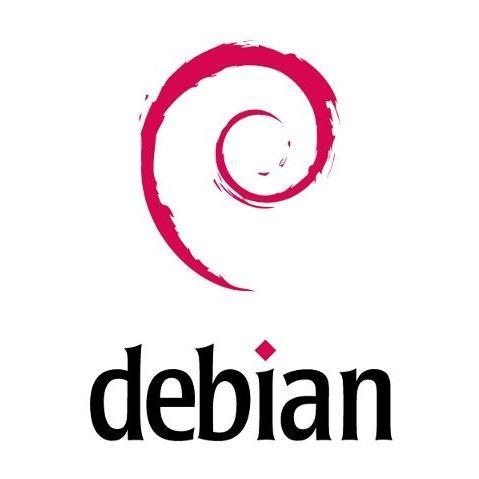

Debian adalah sistem operasi Linux berbasis open-source
yang terkenal karena stabilitas, keamanan, dan manajemen paketnya
melalui APT (Advanced Package Tool).

CentOS adalah sistem operasi berbasis Linux yang didasarkan pada kode sumber Red Hat Enterprise Linux (RHEL).